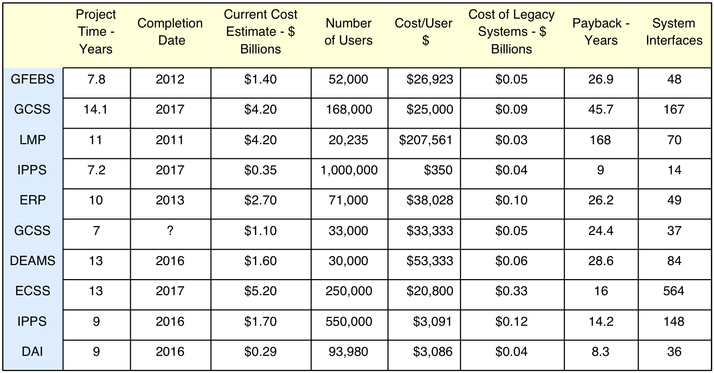

In March, the Government Accountability Office (GAO) delivered to the House Armed Services Committee a report on enterprise resource planning (ERP) systems. These ERPs would be replacing legacy systems costing $890 million per year. Replacing such systems would take anywhere from seven to 14 years. However, when the ERPs finally are installed, they would cost up to $207,561 per user and have a payback time frame as high as 168 years.
The GAO report includes 10 systems with total estimated current costs of $22.7 billion: the General Fund Enterprise Business System (GFEBS); Global Combat Support System (GCSS); Logistics Modernization Program (LMP); Integrated Personnel and Pay System (IPPS); ERP System; GCSS-Marine Corps; Defense Enterprise Accounting and Management System (DEAMS); Expeditionary Combat Support System (ECSS); IPPS-Air Force (IPPS-AF); and Defense Agencies Initiative (DAI).
The primary reason for building the new ERPs is to modernize the interfaces with 560 legacy systems already in place and connect with 1,217 existing applications to meet changing requirements. But, because the projected payback years exceed the life expectancy of technologies in every case, these investments are highly questionable.
This table is incomplete. For example, the U.S. Navy's Next Generation Enterprise Network (NGEN) is excluded even though it is projected to take 11 years and cost more than $40 billion. Enterprise applications also are excluded, such as the Defense Integrated Military Human Resources System (DIMHRS), which was aborted after spending more than a billion dollars.
By examining the GAO report, a reader can learn a great deal about how the Defense Department invests in multibillion-dollar projects. First, the project implementation time always exceeds commercial practices. The Defense Department pursues a sequential phase approach for planning, design, coding and implementation, which means that during each phase, time-consuming agreements must be negotiated over interfaces.
Another issue is that elongated project duration contributes to rising obsolescence. Program management continually is involved in negotiations over about 1,217 interfaces with stakeholders while features are changing. This increases costs and delays schedules. In addition, the costs of every ERP continue to rise as the alteration of requirements dictates revisions that propagate well beyond the scope of any ERP.
The nonstandard user interfaces for each ERP require large investments in training and education. That is excluded from total costs because budgets do not include the payroll of military and civilian personnel.
And, each ERP system has its own infrastructure. Accordingly, each obsolete legacy system must be custom-fitted into the changed ERP.
If the Defense Department would adopt a standard platform-as-a-service (PaaS) model for every ERP, it could offer standard application program interfaces for all connections. Programs then could interact with the ERPs so that the developers could code subsystems for connectivity using interchangeable interfaces. The adoption of such an approach would materially reduce redundant work, cut costs and allow the building of ERP's incrementally.
The current approach to implementing ERPs is not working. The project time line is too long. Only by adopting a standard PaaS environment can this time line be shortened. To maintain interoperability during the transition from legacy to new ERP applications, the Defense Department chief information officer should impose standards that comply with open-source formats. This would avoid spending money on tailor-made custom designs.
The new approach to the design of ERP software must rely on central direction that shows how all programs can be executed. It also requires control of shared data definitions. Current inconsistencies in data formats impose a huge cost penalty. New efforts to start an ERP would have to be guided by strong direction that guides architecture, choice of cloud software and network design. Without such guidance, the current efforts to complete stand-alone ERPs will cost too much and deliver results too late.
Paul A. Strassmann is the distinguished professor of information sciences at George Mason University and teaches AFCEA's online cyber ops course. The views expressed are his own and not necessarily those of SIGNAL Magazine.